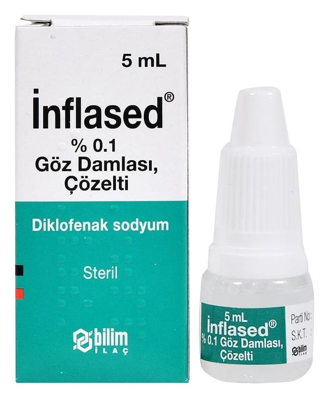

İnflased % 0.1 Göz Damlası, Çözelti, 5 ml

Ne için kullanılır
KT · Bölüm 1İNFLASED, berrak ve renksiz çözeltidir ve 5 mL’lik damlalıklı, şeffaf plastik şişeler ile kullanıma sunulmaktadır.
İNFLASED etkin madde olarak her bir mL’sinde 1 mg diklofenak sodyum içerir.
İNFLASED non-steroidal antiinflamatuvar (NSAİ) ilaçlar olarak adlandırılan bir ilaç grubuna dahildir.
İNFLASED, göz ameliyatlarının öncesinde göz bebeğinin açık kalmasını sağlamak amacıyla ve göz ameliyatlarının veya yaralanmalarının sonrasında ağrı ve/veya inflamasyonu kontrol altına almak amacıyla kullanılır. Ayrıca gözdeki ağrının ve ışığa hassasiyetin giderilmesinde kullanılır.